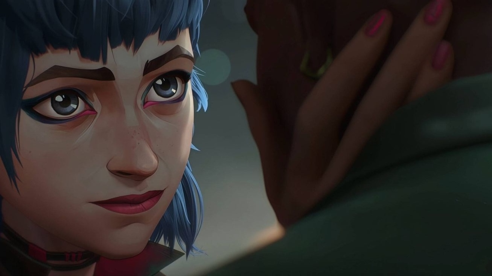
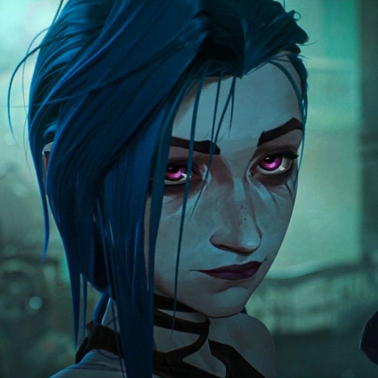
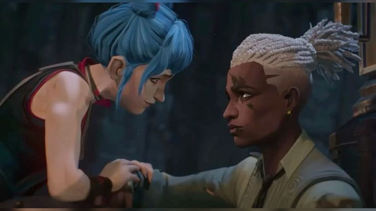

Ekko e Jinx: Ecos de um Passado Perdido
Ekko: O Gênio de Zaun que Dominou o Tempo
Ekko é um personagem carismático e intrigante do universo de League of Legends, com uma presença marcante tanto nos jogos quanto na série animada Arcane. Ele é um jovem prodígio de Zaun, conhecido por sua inteligência excepcional e por sua invenção mais famosa: um dispositivo que lhe permite manipular o tempo.

Jinx: O Caos Incarnado de Zaun
Jinx, antes conhecida como Powder, era uma menina inocente de Zaun que viveu uma infância marcada pela violência e pela pobreza. Um trágico acidente, onde ela acidentalmente matou seus amigos, a transformou em uma pessoa amargurada e com sede de vingança. Adotada por Silco, líder de Zaun, ela se tornou Jinx, uma vilã psicopata e explosiva. Sob a influência de Silco, Jinx desenvolveu um arsenal de armas e causou o caos em Piltover e Zaun. Sua relação com sua irmã, Vi, foi marcada pela dor e pela traição. No final, Jinx foi morta por Vi em um confronto épico, encerrando sua jornada caótica. A história de Jinx é uma tragédia que explora temas como a natureza humana, a culpa e o impacto da violência na sociedade.

A Amizade Perdida de Ekko e Jinx
Ekko e Jinx eram melhores amigos desde a infância, crescendo juntos nas ruas de Zaun. Mas a vida dura da cidade os separou. Uma tragédia transformou a doce Powder em Jinx, uma vilã perigosa. Ekko, por sua vez, se tornou um líder, tentando salvar Zaun.
Apesar de tudo, Ekko nunca desistiu de Jinx e tentou trazê-la de volta. Mas a guerra e as escolhas de cada um os levaram por caminhos diferentes. No final, a amizade deles foi destruída pela violência e pela perda. A morte de Jinx deixou uma marca profunda em Ekko, que precisou lidar com a culpa e a dor de perder sua melhor amiga.
